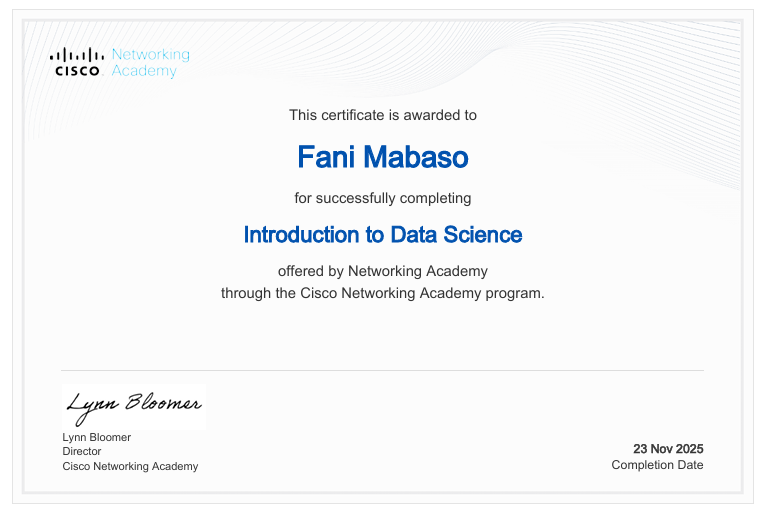
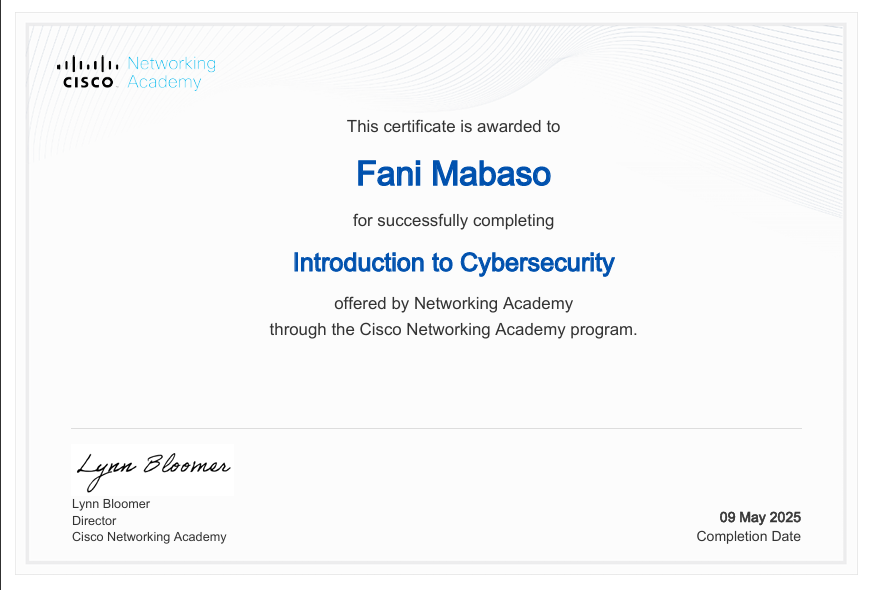
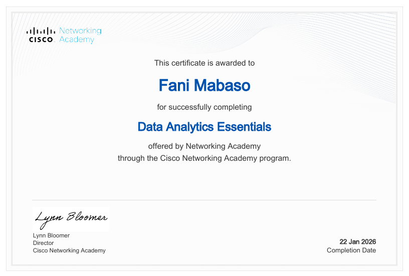
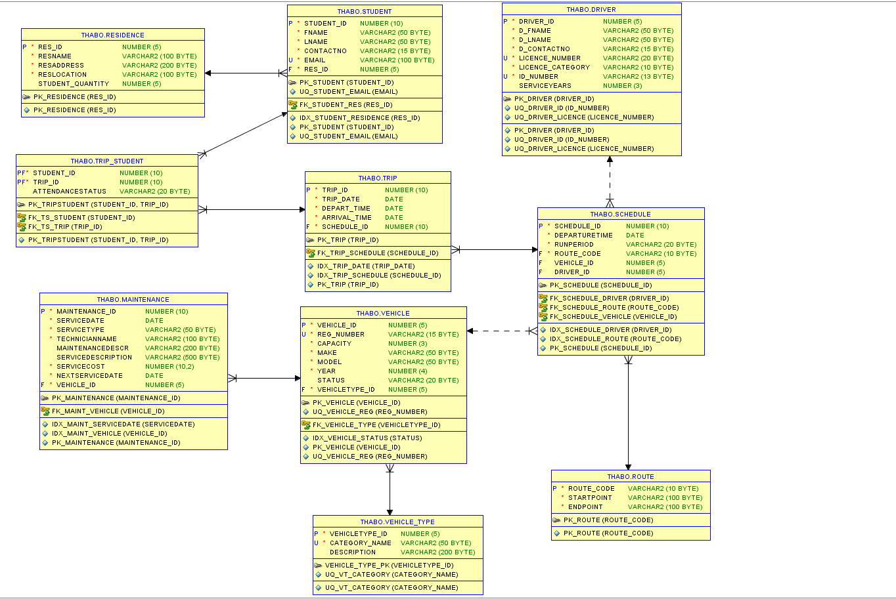

Programming
- Python
- Java
- C++
- HTML5
- CSS3
Final-Year BSc Information Technology Student at North-West University with a passion for Data Analytics, Database Systems, Software Development and Business Technology Solutions.
Who I am and what I enjoy building.
I am a final-year Bachelor of Science in Information Technology student at North-West University with a growing interest in Data Analytics, Software Development and Business Technology.
Through my coursework and practical projects, I have developed experience in Python, Java, Oracle SQL, PL/SQL, database design, systems analysis, object-oriented programming and data-driven problem solving.
I enjoy transforming complex problems into practical technology solutions and continuously expanding my knowledge through university projects, personal development and Cisco Networking Academy certifications.
Turning data into actionable insights.
Building reliable software solutions.
Designing efficient relational databases.
Applying technology to real business challenges.
Projects Completed
Cisco Certifications
Technical Skills
Expected Graduation
Technologies and tools I work with.
My academic journey in Information Technology.
Started my Bachelor of Science in Information Technology, building a foundation in programming, databases, networking, mathematics, and software development.
Expanded my knowledge in Object-Oriented Programming, Systems Analysis & Design, Database Systems, Java, Python, SQL, HTML, CSS, and Computer Networks.
Focused on Artificial Intelligence, Decision Support Systems, Advanced Databases, Data Analytics, Software Engineering, and collaborative development projects.
Completing my degree while seeking graduate opportunities in Data Analytics, Software Development, Business Intelligence and Technology Consulting.
Continuous learning through Cisco Networking Academy.

Explored data science fundamentals, data preparation, visualization, analytical thinking and real-world data workflows.
Download Certificate
Learned cybersecurity principles, threat awareness, risk management, security best practices and digital safety.
Download Certificate
Built practical knowledge of SQL, data cleaning, business intelligence, dashboards and data-driven decision making.
Download CertificateHighlighting one of my strongest university projects.

Collaborated in designing and implementing a relational database management system for a transport company using Oracle SQL Developer and PL/SQL.
The project focused on data normalization, entity relationships, business rules, stored procedures, reporting, and database integrity while supporting transport scheduling, driver allocation, and trip management.
A selection of academic and personal projects demonstrating my skills in software development, database design and analytical problem solving.
Designed and developed a textbook rental management system to improve inventory management, rental tracking and user interaction. The project demonstrates software design principles while evolving an earlier console-based application into a more user-friendly solution.
Collaborated in the design and implementation of a relational database system for a transport management company. The project involved ER modelling, normalization, PL/SQL programming and analytical reporting to support operational decision-making.
Continuously expanding my technical skillset.
I am actively seeking graduate programmes, internships and entry-level opportunities in Data Analytics, Software Development, Business Intelligence, and Technology Consulting.
I enjoy solving real-world problems through technology, collaborating with teams, and continuously learning new tools and methodologies that create meaningful business value.
Download My CVFeel free to reach out regarding graduate opportunities, collaborations or professional networking.